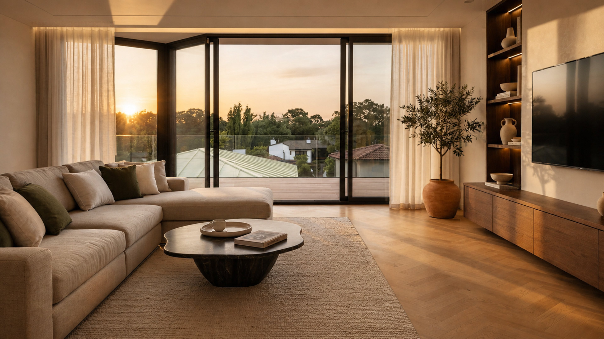
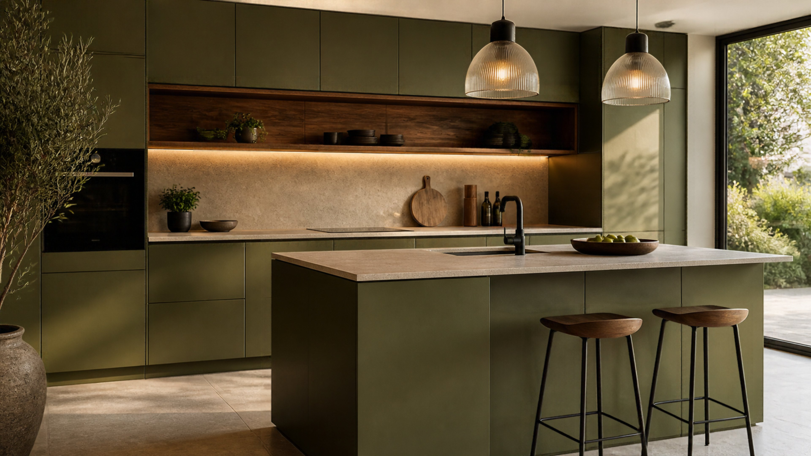
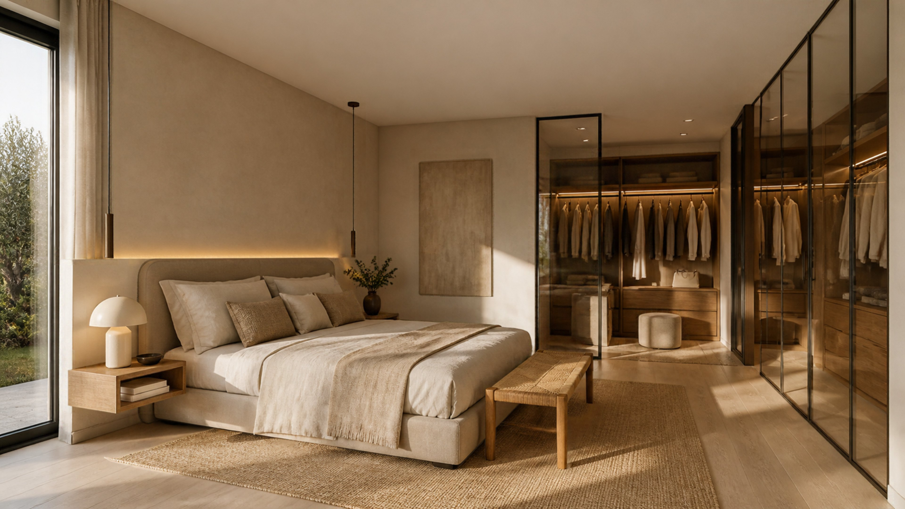
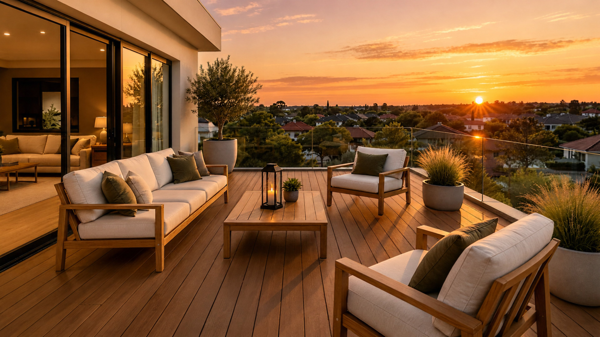

Le séjour
Un grand volume ouvert sur la terrasse : depuis le 3e étage, la lumière du soir entre jusqu'au fond de la pièce.

La cuisine
Îlot central, plan de travail en pierre claire et façades mates : une cuisine pensée pour recevoir.

La suite parentale
Une chambre au calme, prolongée par son dressing vitré.

La terrasse
Une vraie pièce en plus, orientée sud-ouest, avec une vue dégagée pour profiter du soleil jusqu'en fin de journée.